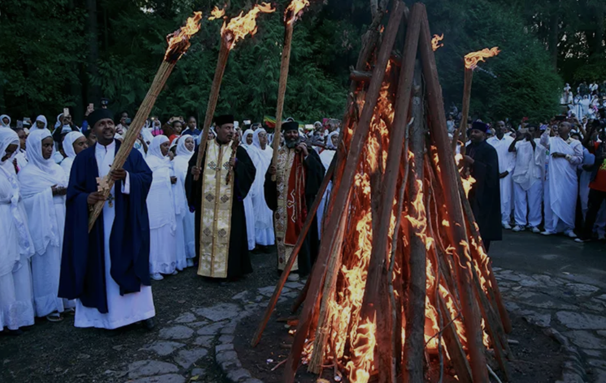
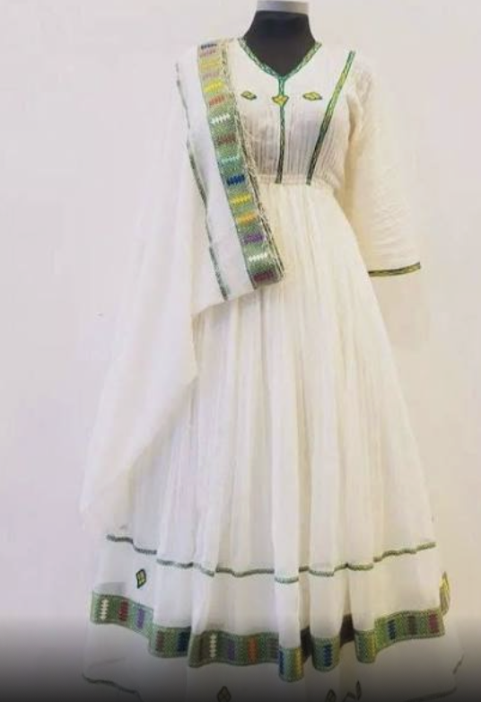
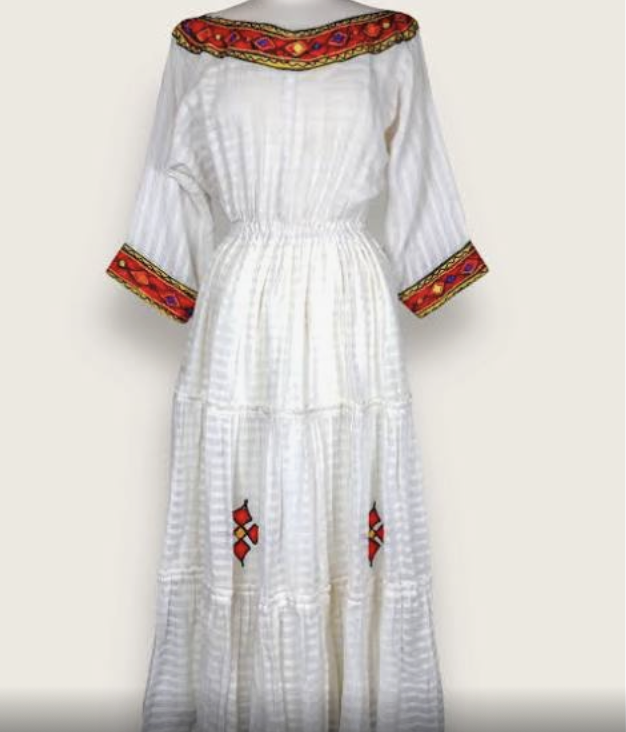
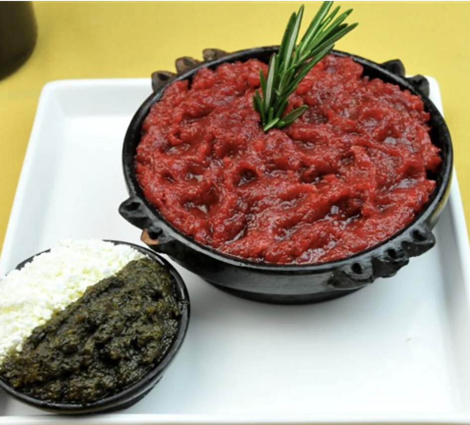
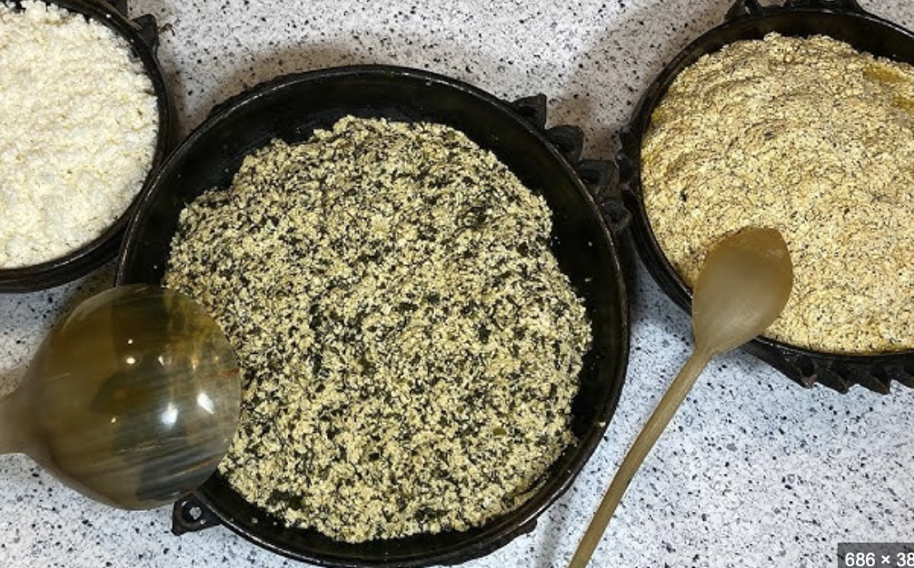
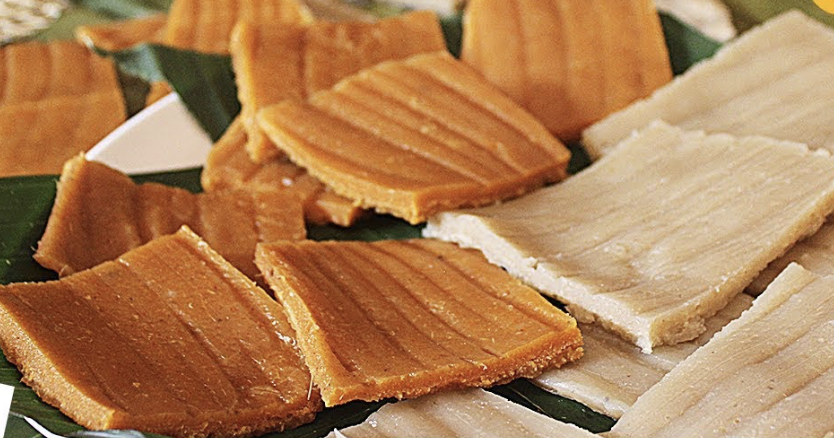

መስቀል(Meskel)
As we start form the name "Meskel" translates to "cross" in Ge'ez, an ancient Ethiopian language. The holiday is characterized by the Demera (a large bonfire), which symbolizes the light of Christ. The flames of the Demera are believed to chase away evil spirits and bring blessings for the year ahead. The celebration also includes church services, prayers, and feasting. It is celebrated on 17 Meskerem on Ethiopian calender (September 27th).
During Meskel, people often wear traditional Ethiopian attire, known as "Netela" or "Shamma", which are typically made of white cotton. These garments are worn in reverence and respect for the sacred nature of the holiday. The white color symbolizes purity and the spirit of the festival. I prefer on this holiday more light clothes which are mostly white.
 
For Meskel, Ethiopian traditional foods are prepared. This foods are one of my Favorite foods thought out Ethiopian foods. It's Kitfo,Minced raw beef mixed with clarified butter (niter kibbeh) and spices. It’s usually served with injera and sometimes cooked lightly for those who prefer not to eat raw meat.
The other delicious food is Gomen. Collard greens cooked with onions, garlic, and spices. This dish is often enjoyed as a side and complements the main courses well which is the kitfo.
The other delicious food is Kocho. Kocho is made from the pith of the false banana plant, also known as enset or "enset" (Ensete ventricosum). The plant’s pith is fermented to develop its flavor.
